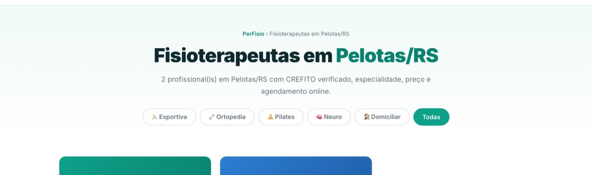

Quase ninguém procura “fisioterapia” sozinho. A busca real tem lugar dentro dela: “fisioterapeuta em Pelotas”, “fisioterapeuta perto de mim”, “fisioterapeuta domiciliar Caruaru”, “pilates clínico no Centro”. É uma busca local, e busca local tem regras próprias.
Aqui vai o que funciona, sem truque e sem precisar pagar anúncio. Antes do aviso de sempre: ninguém garante primeiro lugar no Google, e quem garante está vendendo ilusão. O que dá para fazer é não deixar de fora nada do que a busca precisa encontrar.
1. Ter uma página só sua, com endereço próprio
Um perfil de rede social raramente aparece nessas buscas, e um link de WhatsApp nunca aparece. O
Google precisa de uma página indexável, com endereço fixo. No PerFisio esse endereço já nasce com a
cidade dentro dele — perfisio.com.br/fisioterapeuta-pelotas-rs/seu-nome — e o título da
página fica “Fisioterapeuta em Pelotas — Seu Nome”.
2. Dizer a cidade e o bairro no texto
Parece óbvio, mas é o erro mais comum: a apresentação fala de técnicas e não diz onde a pessoa atende. Escreva o bairro, a cidade e as regiões vizinhas que você cobre. Se faz domicílio, diga até onde vai.
3. Escrever do jeito que o paciente fala
“Reabilitação de membro inferior pós-artroplastia” é o termo correto — mas quem busca digita “dor no joelho depois da cirurgia”. Use os dois: o termo técnico dá credibilidade, o termo comum é o que faz a página ser encontrada.
4. Estar numa página de cidade
Além do seu perfil, o PerFisio mantém uma página por cidade — “Fisioterapeutas em Pelotas/RS”, por exemplo — que lista quem atende ali, com filtro por especialidade. São duas portas de entrada: a sua página e a listagem da cidade.

5. Abrir rápido e funcionar no celular
A busca por dor é de celular, muitas vezes com internet ruim. Página lenta ou que exige zoom perde a pessoa antes de carregar. Esse ponto é técnico e você não deveria precisar pensar nele: a página do PerFisio já nasce leve e adaptada.
6. Criar também o perfil no Google Empresas
Vale dizer com honestidade: o PerFisio não substitui o Perfil da Empresa no Google, aquele cartão que aparece no mapa, de graça. Se você atende em endereço fixo, crie o seu — leva meia hora, pede confirmação de endereço e é o que coloca você no mapa. Os dois se somam: o perfil no mapa e a página que agenda.
7. Juntar avaliações de verdade
Avaliação pesa nos dois lugares — no mapa e na sua página. Peça no fim do tratamento, quando o paciente está satisfeito, e facilite ao máximo: QR code na recepção, link no WhatsApp. Nunca compre avaliação nem escreva você mesmo: além de ser desonesto com quem está escolhendo um profissional de saúde, o Google é bom em identificar isso.
8. Dar tempo — e medir
Página nova não ranqueia de um dia para o outro: leva de algumas semanas a alguns meses até o Google confiar nela. Dois hábitos ajudam: manter a página completa e atual (preço, especialidades, fotos) e divulgar o link em lugares onde ele seja clicado — bio, mensagem automática, cartão, assinatura de e-mail. Link que recebe visita é sinal de que a página serve para alguma coisa.
O que o PerFisio já faz por você
- Endereço com a cidade e título pensado para a busca local.
- Página da sua cidade, com filtro por especialidade.
- Sitemap e dados estruturados enviados ao Google, sem você mexer em nada.
- Link curto para divulgar e um cartaz com QR code para pedir avaliação.
O resto — dizer onde você atende, escrever como o paciente fala e pedir avaliação — é com você, e é exatamente a parte que nenhum fornecedor de site faz no seu lugar. Se ainda não tem a página, o passo a passo está aqui; se já tem, confira se não está faltando nada com o checklist de oito itens.